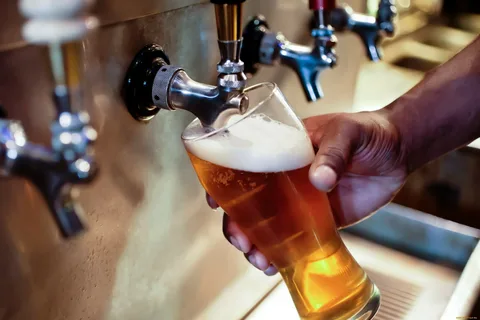
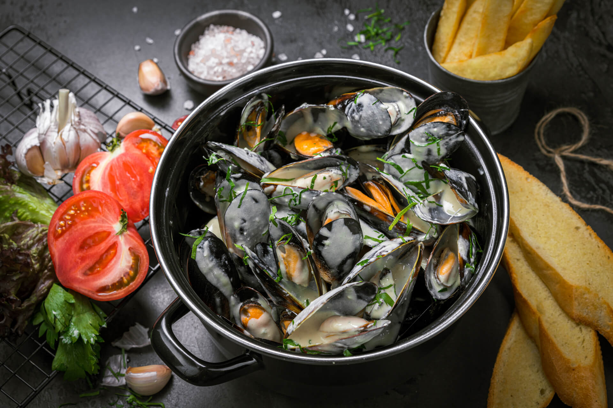
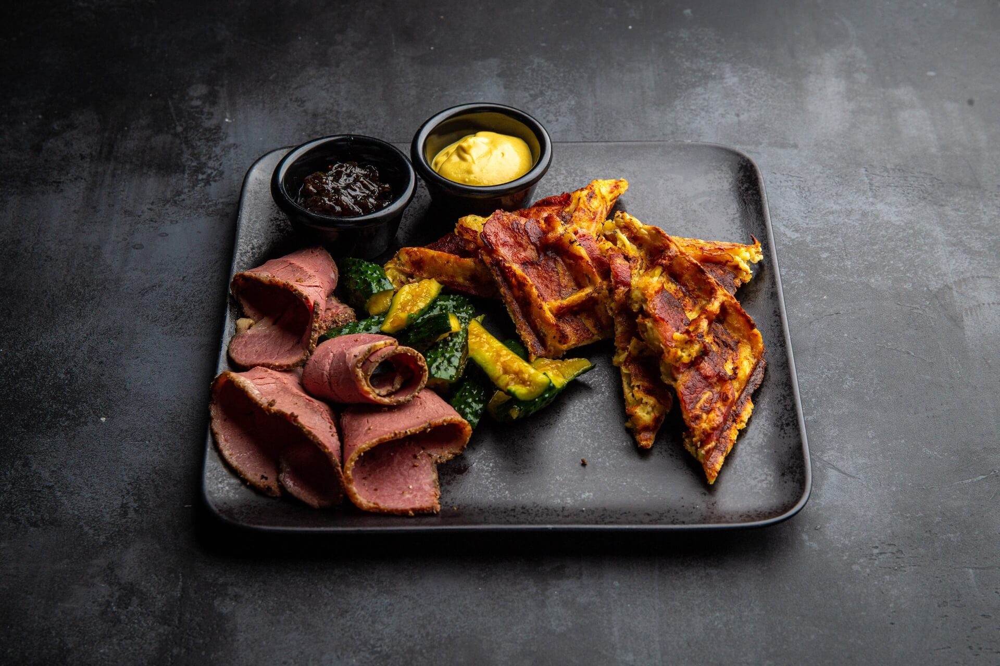

Более 100 сортов со всего мираБельгии, США, Германии, Великобритании, Шотландии, Дании, Швеции, Нидерландов, Гавайских островов, России.
Bayreuther Hell. Классический пшеничный хель родом из Германии. Производится методом низового брожения при температуре 1 °С. Благодаря этому вкус напитка приобретает особую свежесть, которая гармонично сочетается с пикантной хмелевой горечью. Bayreuther Hell — один из самых популярный продуктов семейной пивоварни Bayreuther, которая расположена в небольшом городе Байройт. Производство существует уже несколько веков, пользуясь неизменной популярностью у местных жителей.
Bourgogne des Flandres. Пиво Bourgogne des Flandres производится по уникальной древней технологии, которую называют «вливанием ламбика». Процесс заключается в том, что тщательно отобранный ламбик смешивают с тёмным аббатским элем, а затем оставляют созревать в дубовых бочках из-под порто. В результате получается напиток, похожий на традиционный фламандский эль, но без присущей ему кислотности, яркого рубинового цвета, с необычным «винным» вкусом и пышной сливочной пенкой. Впервые эль Bourgogne des Flandres сварили в 1765 году, а недавно его включили в список лучших хмельных напитков мира.
Leffe Brune. Leffe Brune (Леффе Брюн) — подлинное аббатское пиво с полным сладковатым вкусом, которое родилось в далеком 1240 году. Этот сорт темного бельгийского пива начали варить в XII веке монахи аббатства Notre Dame de Leffe, расположенного в южной бельгийской провинции Намюр около городка Динан. За годы своего существования и аббатство, и пивоварня не раз подвергались разрушениям от стихийных бедствий и проходивших войн.
Подаются с багетом и картофелем фри.Живые мидии
Попробуйте свежее прочтение от шеф-повара Lambic.Бельгийские вафли
